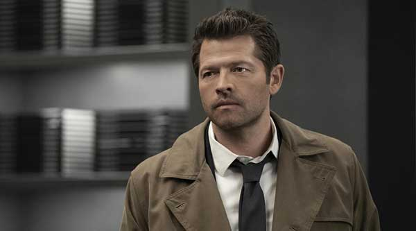

Кастиэль из Сверхъестественного сделал шокирующее заявление

Заключительный сезон телесериала о братьях Винчестерах с особым трепетом ждали все поклонники мистики, появившиеся за 15 лет его существования. Каждый эпизод неоднократно обсуждается, а киностудию заполняют разными письмами с жалобами и предложениями.
Признание Кастиэля подтвердилось создателями сериала Сверхъестественное
Одним из эффектных уходов из шоу можно считать гибель Кастиэля. Чтобы спасти жизнь Дину, ангел был вынужден пожертвовать собой. Если немного вернуться назад, можно вспомнить об особенном договоре Каса с Пустотой. Во время особенного договора ангел согласился покинуть мир в тот момент, когда почувствует себя счастливым. А теперь вернемся к сюжету 18 серии. Здесь перед гибелью друг охотников сознается Дину в любви и в этот момент появляется пустота, чтобы забрать должника вместе со Смертью. Вначале странные любовные признания взбудоражили сеть. У всех был шок, ведь, судя по видео, один из ведущих персонажей был геем и тщательно это скрывал.
Чтобы разобраться в замысле сценаристов, фанаты потребовали Мишу Коллинза пролить свет на инцидент, но признания актера не порадовало. Оказывается, именно так и видели завершение длинного пути сценаристы для Кастиэля. И да, Кас действительно был геем и испытывал к Винчестеру-старшему особенные чувства. Естественно, такое шокирующее интервью раскритиковали, но менять итог никто не будет. Остается только принять то, как авторы решили завершить путь персонажа.